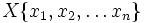
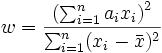
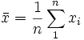
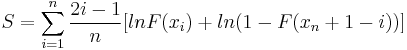
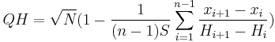

Inhalt |
Bei einem gegebenen Satz von Beobachtungen , der entweder in aufsteigender oder absteigender Reihenfolge sortiert ist, wird die Shapiro Wilk W-Statistik definiert als:

wobei

der Stichprobenmittelwert ist und ai, für i=1, 2,...n ein Satz von mathematischen Gewichtungen, deren Werte nur von der Stichprobengröße n abhängen.
Der Algorithmus, der von Origin verwendet wird, stammt aus dem von Patrick Royston beschriebenen Applied Statistics Algorithm R94 (1995). Die Funktion unterstützt Stichprobenumfänge von 3.
Der Freiheitsgrad (DF) ist gleich der Stichprobengröße.
Origin ruft eine NAG-Funktion auf, nag_1_sample_ks_test (g08cbc), um die Statistik zu berechnen. Bitte lesen Sie weitere Einzelheiten zu dem Algorithmus im entsprechenden NAG-Dokument nach.
Der Lilliefors-Test ist eine Adaption des Kolmogorov-Smirnov-Tests. Die Statistik wird auf dieselbe Weise berechnet wie die Statistik des Kolmogorov-Smirnov-Tests. Der p-Wert ist jedoch unterschiedlich, da der Lilliefors-Test den Mittelwert und die Varianz der Daten nicht berücksichtigt, während der Kolmogorov-Smirnov-Test das tut. Die Methode nach Dallal und Wilkinson (1986) wird für die Berechnung des p-Werts verwendet.
Bei einem gegebenen Satz von Beobachtungen , der in aufsteigender Reihenfolge sortiert ist, wird die Anderson-Darling-Statistik definiert als:
A2 = - n - S
wobei

F ist die kumulative Verteilungsfunktion der F-Verteilung.
Bei einem gegebenen Satz von Beobachtungen , der in aufsteigender Reihenfolge sortiert ist, wird Chen-Shapiro-Statistik definiert als:

wobei
Hi = - 1((i - 3 / 8) / (n + 1 / 4)) und - 1 sind die Inverse der Standardnormalverteilung.